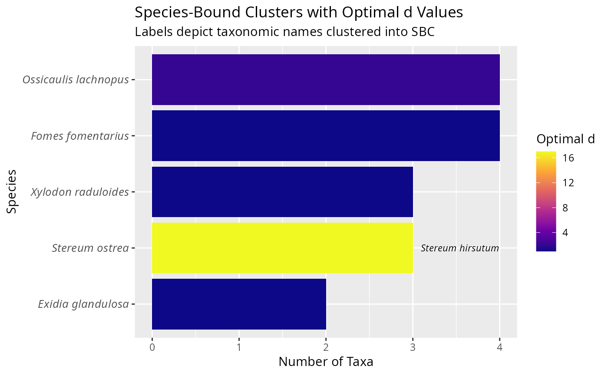

<a href="https://adrientaudiere.github.io/MiscMetabar/articles/Rules.html#lifecycle"> <img src="https://img.shields.io/badge/lifecycle-experimental-orange" alt="lifecycle-experimental"></a>
This function creates Species-Bound Clusters (SBC) from a phyloseq object containing taxa (ASV/OTU) sequences and taxonomy based on a proposition by Riley *et al.* 2025 (<https://doi.org/10.1186/s12915-025-02284-x>).
SBC (Species bound cluster) are defined as "clusters that include all and only ESVs assigned to one species, the sequence similarity threshold can vary between these clusters" (Riley *et al.* 2025 <https://doi.org/10.1186/s12915-025-02284-x>).
It uses the SWARM algorithm to cluster taxa within each taxnames (e.g. Genus species) based on sequence similarity, allowing for variable d values to optimize clustering.
Run swarm with d=1 to d=max_d, then for each taxnames (e.g. Species binomial name), find the lowest d that clusters all taxa assigned to this taxnames into one cluster. If a taxnames is represented by only one taxa, it is not clustered. Taxnames containig "NA" are considered as unassigned. By default, unassigned ASVs are clustered into other cluster without counting for their own taxnames. Set include_unassigned = FALSE to force cluster to included all taxa with a given taxnames but none of the unassigned ones.
If the maximum d is reached, keep the clustering at this d and print a warning. If strict_sbc = TRUE, only taxa corresponding to strict SBC will be clustered and return in the phyloseq object, in that cases, taxa whose taxnames is clustered into multiple clusters or whose cluster contains multiple taxnames will have NA as cluster_ID and will be removed from phyloseq object.
The function returns a data.frame with the cluster assignments and the optimal d value for each taxnames, as well as a modified phyloseq object with the cluster information added to the taxonomy table.
Usage
cluster_sbc(
physeq,
taxonomic_rank = c("Genus", "Species"),
max_d = 20,
include_unassigned = TRUE,
allow_multiple_taxa = FALSE,
regroup_cluster = TRUE,
tax_adjust = 1L,
verbose = TRUE
)Arguments
- physeq
A phyloseq object containing ASV/OTU sequences and taxonomy
- taxonomic_rank
Character. Name of the taxonomy column(s) containing taxonomic assignments to build SBC. Can be a vector of two columns (e.g. c("Genus", "Species"), the default).
- max_d
Integer. Maximum d value to test for SWARM (default: 20)
- include_unassigned
Logical. Whether to cluster unassigned taxa separately (default: TRUE)
- allow_multiple_taxa
Logical. If TRUE, allow clusters to contain multiple taxnames (default: FALSE)
- regroup_cluster
Logical. If TRUE, regroup taxa in the phyloseq object based on their cluster_ID using [merge_taxa_vec()] (default: TRUE)
- tax_adjust
Character vector. See ?[MiscMetabar::merge_taxa_vec()] 0: no adjustment; 1: phyloseq-compatible adjustment; 2: conservative adjustment
- verbose
Logical. Print progress messages (default: TRUE)
Value
A list containing: - clusters: data.frame with taxa_id, taxnames, cluster_ID, optimal_d - summary: data.frame with summary statistics - n_taxa: total number of taxa - n_unassigned: number of unassigned taxa - n_taxa: number of unique taxnames - n_already_SBC: number of taxnames already represented by a single taxa - n_taxa_to_cluster: number of taxnames with multiple taxa to cluster - n_SBC: number of SBC clusters created - d_per_taxnames: data.frame with taxnames, n_taxa, optimal_d, n_clusters, other_taxnames, unassigned_taxa - physeq_with_info: modified phyloseq object with cluster info added to tax_table - cluster_ID: The id of the SBC cluster - cluster_d: The optimal d value used to create the SBC cluster - other_taxnames_in_cluster (logical) - unassigned_taxa_in_cluster (logical) - physeq_SBC: modified phyloseq object with cluster info added to tax_table
Examples
res <- cluster_sbc(data_fungi_mini)
#> ℹ Computing SWARM clustering for d = 1 to 20 ...
#> ℹ Finding optimal d values for each taxonomic names...
#> ℹ Processing Stereum ostrea - 3 taxa
#> ! Multiple taxa clustered into a single group at optimal d = 17 for Stereum ostrea with "Stereum ostrea" and "Stereum hirsutum" taxnames inside
#> ℹ Processing Xylodon raduloides - 3 taxa
#> ✔ Found optimal d = 1 for Xylodon raduloides.
#> ℹ Processing Ossicaulis lachnopus - 4 taxa
#> ✔ Found optimal d = 2 for Ossicaulis lachnopus.
#> ✔ Stereum hirsutum is already represented by only one taxa
#> ✔ Antrodiella brasiliensis is already represented by only one taxa
#> ✔ Basidiodendron eyrei is already represented by only one taxa
#> ✔ Sistotrema oblongisporum is already represented by only one taxa
#> ℹ Processing Fomes fomentarius - 4 taxa
#> ✔ Found optimal d = 1 for Fomes fomentarius.
#> ✔ Mycena renati is already represented by only one taxa
#> ✔ Helicogloea pellucida is already represented by only one taxa
#> ✔ Radulomyces molaris is already represented by only one taxa
#> ✔ Elmerina caryae is already represented by only one taxa
#> ✔ Phanerochaete livescens is already represented by only one taxa
#> ✔ Gloeohypochnicium analogum is already represented by only one taxa
#> ✔ Hyphoderma roseocremeum is already represented by only one taxa
#> ✔ Hyphoderma setigerum is already represented by only one taxa
#> ✔ Trametes versicolor is already represented by only one taxa
#> ✔ Peniophora versiformis is already represented by only one taxa
#> ℹ Processing Exidia glandulosa - 2 taxa
#> ✔ Found optimal d = 1 for Exidia glandulosa.
#> ✔ Peniophorella pubera is already represented by only one taxa
#> ✔ Auricularia mesenterica is already represented by only one taxa
#> ✔ Marchandiomyces buckii is already represented by only one taxa
#> ✔ Hericium coralloides is already represented by only one taxa
#> ✔ Xylodon flaviporus is already represented by only one taxa
#> ✔ Taxa merged into 24 SBC clusters
#> ✔ === Clustering complete ===
#> ℹ Total taxa: 45
#> ℹ Unassigned taxa: 10
#> ℹ Unique taxonomic names: 45
#> ℹ Already single-taxa taxnames: 19
#> ℹ Multiple-taxa taxnames clustered: 16
#> ℹ Mean swarm d: 4.4
#> ℹ Total SBC clusters: 43
#> ℹ Average taxa per SBC cluster 0.81
track_wkflow(list(data_fungi_mini, res$physeq_SBC))
#> Compute the number of sequences
#> Start object of class: phyloseq
#> Start object of class: phyloseq
#> Compute the number of clusters
#> Start object of class: phyloseq
#> Start object of class: phyloseq
#> Compute the number of samples
#> Start object of class: phyloseq
#> Start object of class: phyloseq
#> nb_sequences nb_clusters nb_samples
#> 1 569525 45 137
#> 2 496691 24 131
ggplot(
res$d_per_taxnames,
aes(x = reorder(taxnames, n_taxa), y = n_taxa, fill = optimal_d)
) +
geom_bar(stat = "identity") +
geom_text(aes(label = paste0(other_taxnames)),
hjust = -0.1, size = 3,
fontface = "italic"
) +
coord_flip() +
scale_fill_viridis_c(option = "plasma") +
labs(
title = "Species-Bound Clusters with Optimal d Values",
subtitle = "Labels depict taxonomic names clustered into SBC",
x = "Species",
y = "Number of Taxa",
fill = "Optimal d"
) +
theme(axis.text.y = element_text(size = 10, face = "italic"))
